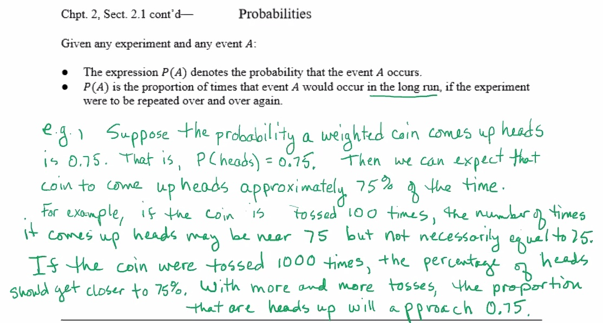
More generally: if
For any event
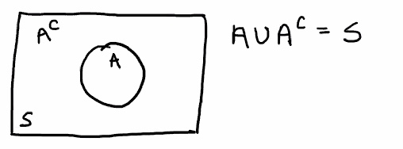
Events
Remember:
A target on a test firing range consists of a bull's eye with two concentric rings around it. A projectile is fired at the target. The probability it hits the bull's eye is 0.1, the probability that it hits the innter ring is 0.25, and the probability it hits the outer ring is 0.45:
What is the probability that the projectile hits the target?
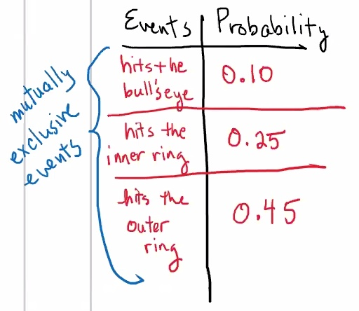
Since they are mutually exclusive, they can be summed.
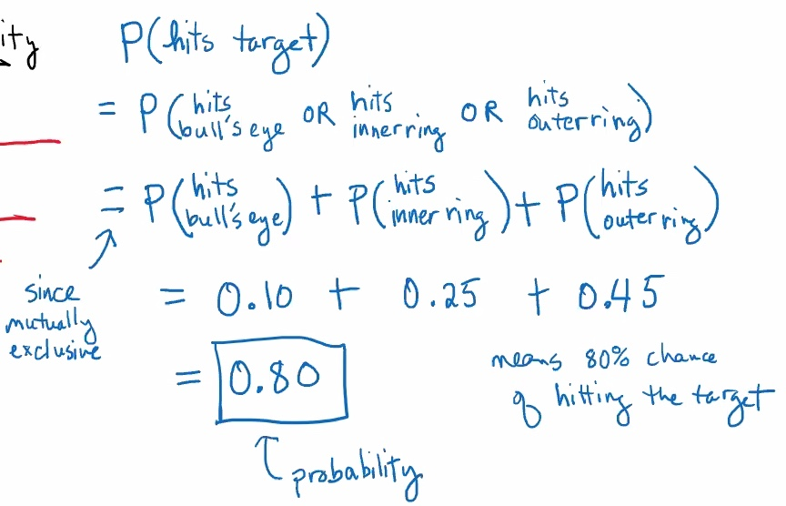
What is the probability that it misses the target?
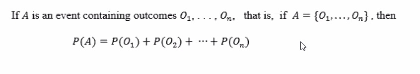
A six sided die is rolled,
Let
Then:
If the die was known to be fair and that each outcome was equally likely, then each individual outcome would have the probability of happening
So:
A population from which an item is sampled at random can be thought of as a sample space with equally likely outcomes.
If a sample space has
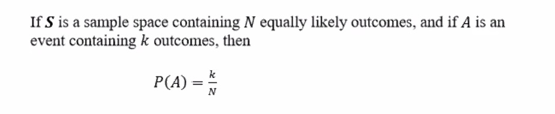
A card is randomly selected from a deck of 52 cards. Find the probability the selected card is:
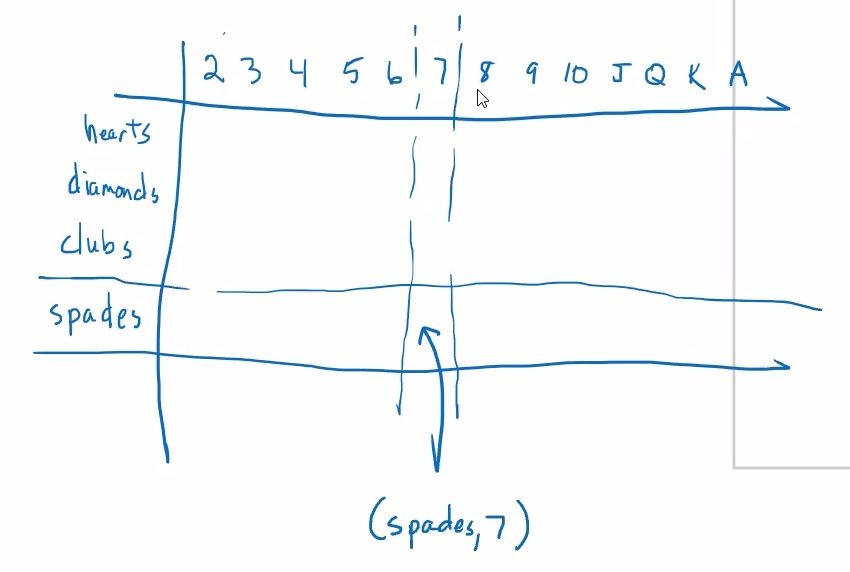
Can't simply add the previous probability because they are not mutually exclusive events!
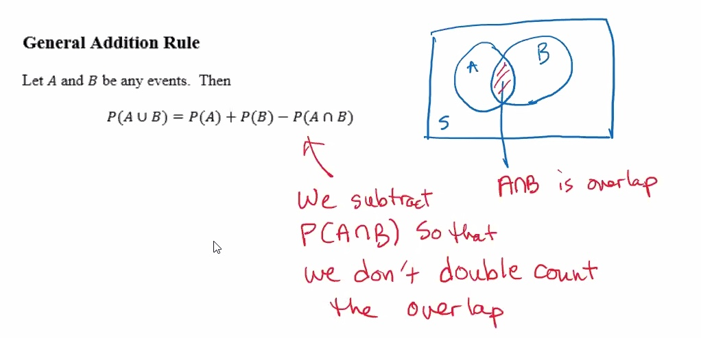
This can be used when events are not mutually exclusive.
Mini-proof:
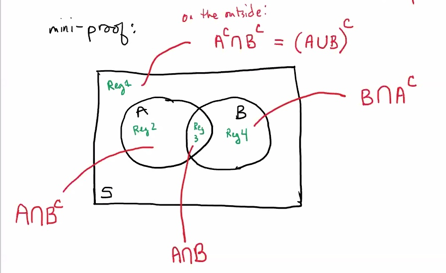
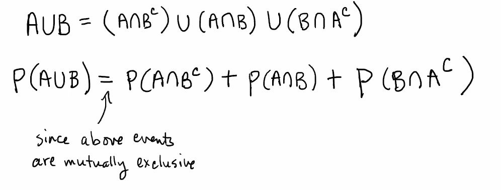
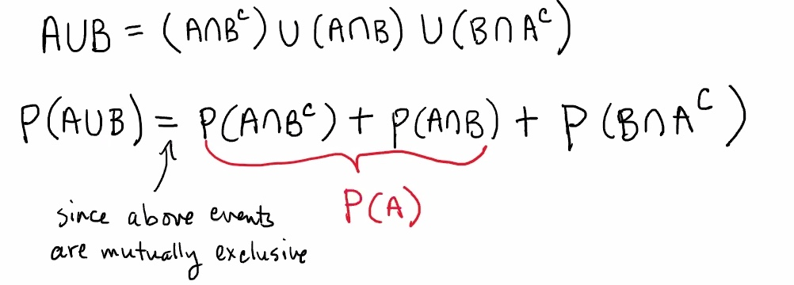
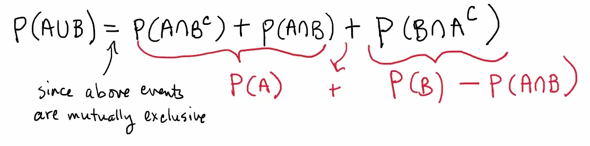
A special take away from this:
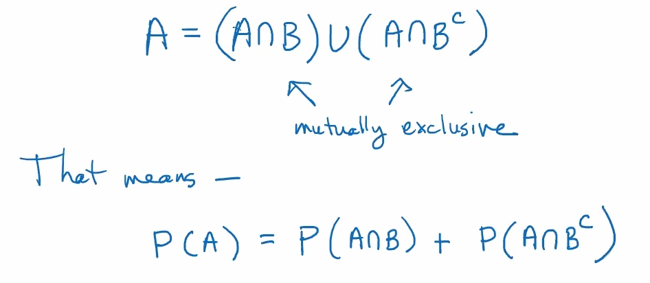